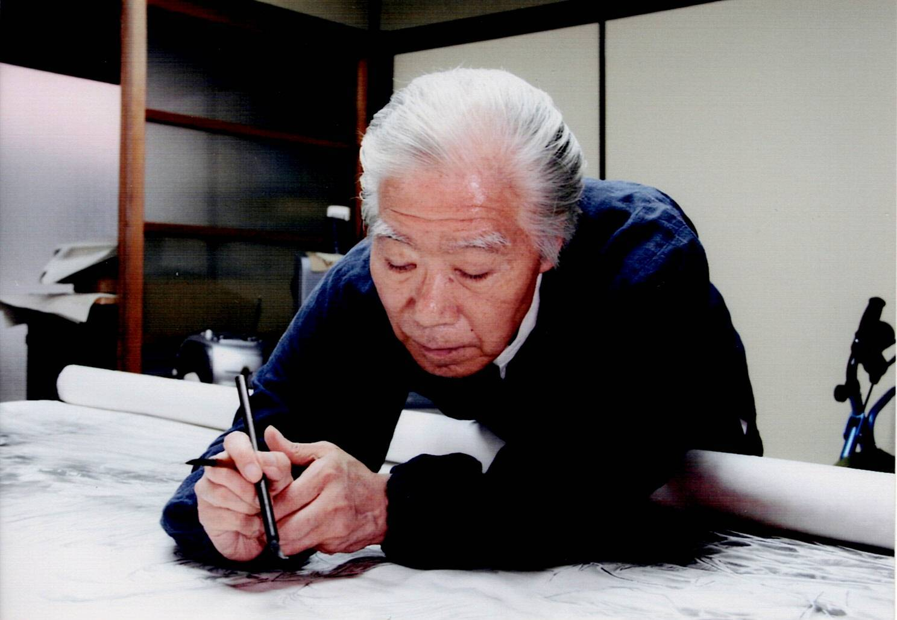

Memorial Museum × Gyokusen Luxury Collection
Musée Commémoratif × Collection de Luxe Gyokusen
嵐山の静寂に響く、墨の呼吸。
日本の美学、その極致。国家と聖域が認めた不動の価値を、次世代の遺産へ。
Sakujuro Yata's artistic journey is an odyssey of unparalleled recognition. From receiving the Grand Croix d’Or—the highest grade approved by the French Republic—to being awarded the LDP President Prize by Prime Minister Shinzo Abe, his credentials are not mere accolades but sovereign endorsements. These medals and honors testify to a life dedicated to spiritual excellence and national cultural authority, making his legacy an unshakeable asset for the global elite.
L'héritage de Sakujuro Yata est défini par une reconnaissance souveraine sans précédent. De la Grand Croix d’Or de France au prix remis par le Premier Ministre Shinzo Abe, ses credentials ne sont pas de simples récompenses, mais des avals diplomatiques confirmant sa place dans l'histoire culturelle mondiale. Ces distinctions témoignent d'une vie dédiée à l'excellence spirituelle et à l'autorité culturelle nationale.
フランス共和国承認の勲章「大賞（Grand Croix d’Or）」、そして内閣総理大臣・安倍晋三より授与された「自由民主党総裁賞」。これらの栄誉は、画伯の芸術が個人の表現を超え、国家の威信と歴史を担保する「公的な至宝」であることを世界に証明しています。
Inheriting the pinnacle of Kyo-Yuzen craftsmanship from the Master’s bloodline. Each Kimono is a living canvas where the dynamic strokes of Sumi-e art harmonize with thousand-year traditions. This is a wearable heritage, utilizing secret techniques passed down from Gyokurin Yata to Sakujuro, capturing the profound grace of the Japanese landscape.
Héritant de l'apogée de l'artisanat Kyo-Yuzen du lignage du Maître. Chaque kimono est une toile vivante où les traits dynamiques du Sumi-e s'harmonisent avec des traditions millénaires. C'est un héritage portable, utilisant des techniques secrètes transmises de Gyokurin Yata à Sakujuro, capturant la grâce profonde du paysage japonais.
父・玉林より相承した京友禅最高峰の技。それは単なる衣装ではなく、墨の魂が交錯する「生きた伝統」です。日本の精神的レジリエンスと気品を纏う、真の貴顕のためのコレクション。
Classic elegant silhouettes meet the silent fire of Yata’s spirit. Utilizing revolutionary sewing techniques to achieve incredible lightness, Gyokusen suits integrate the Master's original ink art into the lining—a "hidden sanctuary" of protection and status for global leaders who carry the weight of the world.
Des silhouettes élégantes et classiques rencontrent le feu silencieux de l'esprit de Yata. Utilisant des techniques de couture révolutionnaires pour atteindre une légèreté incroyable, les costumes Gyokusen intègrent l'art original à l'encre du Maître dans la doublure—un « sanctuaire caché » de protection pour les leaders mondiaux.
伝統の技法で仕立てられたジャケットに、巨匠の水墨画を宿す。特殊な縫製により実現した羽のような軽さは、過酷な決断を下すリーダーの背中を支える「纏う聖域」であり、現代のダンディズムの極致です。
Meaning "Seven Seas," Sept mers carries the heart of Japanese Haute Couture to the world stage. Every piece is a "Japan Made" masterpiece, utilizing supreme materials to celebrate individual elegance, creating a lifelong cultural artifact.
Signifiant « Sept Mers », Sept mers porte le cœur de la Haute Couture japonaise sur la scène mondiale. Chaque pièce est un chef-d'œuvre « Japan Made », utilisant des matériaux suprêmes pour célébrer l'élégance individuelle, créant un artefact culturel pour toute une vie.
「七つの海（Sept mers）」。世界へ通じる精神を名に冠し、上質な素材と確かな職人技により女性の格と美しさを最大限に引き出す一生ものの「文化遺産」です。
A Sacred Convergence of the Divine and the Artistic, Enshrined for Eternity.
Une Convergence Sacrée du Divin et de l'Artistique, Consacrée pour l'Éternité.
神域と芸術が交錯し、永劫の静寂に守られし至宝。
Sakujuro Yata's works are not for mere consumption; they are assets of veneration. His masterpiece "Silence" (Seijaku) is permanently enshrined in the Kagura Hall of Ise Grand Shrine—the spiritual heart of Japan and the sanctuary of the Imperial tradition. Simultaneously, "Billowing Waves" (Hato) rests within the Madeleine Church in Paris. These works are sacred assets preserved for eternity, recognized by the most sacred institutions on Earth.
Les œuvres de Sakujuro Yata ne sont pas destinées à une simple consommation ; ce sont des objets de vénération. Son chef-d'œuvre « Le Silence » (Seijaku) est consacré en permanence au Sanctuaire Ise-jingu—le cœur spirituel du Japon et le sanctuaire de la tradition impériale. Parallèlement, « Vagues Déferlantes » (Hato) repose à l'Église de la Madeleine à Paris. Ce sont des actifs sacrés préservés pour l'éternité, reconnus par les institutions les plus sacrées de la Terre.
伊勢神宮、そしてパリ・マドレーヌ寺院。最高峰の聖域に選ばれた傑作群は、単なる美術品を超えた「尊き祈り」そのもの。永劫に守られるべき、静かなる至宝との邂逅。

画伯は自然への鋭い観察眼と生命への深い慈しみを通じ、夢を追うことの尊さと、世界の平和を次世代へ伝え続けました。筆一筋に込められたその志は、今もこの美術館の静寂の中に、力強く息づいています。
Sakujuro inherited the secret techniques of fabric painting from his father, Gyokurin—a master of the highest rank. While he was known for a genius-like pseudonym "Hakuyo" in his youth, he ultimately chose to use his birth name, Sakujuro. This name holds a profound Zen meaning, reflecting the Ten Stages of the Ox-Herding Pictures.
Sakujuro a hérité des techniques secrètes de la peinture sur tissu de son père, Gyokurin—un maître du plus haut rang. Bien qu'il fût connu sous le pseudonyme de génie « Hakuyo » dans sa jeunesse, il a finalement choisi son nom de naissance, Sakujuro. Ce nom porte une signification zen profonde, reflétant les Dix Étapes des Images du Buffle.
京都・綾部、京友禅の名門に誕生。父・矢田茂久雄（玉林）より一子相伝の秘技を継承。雅号「白羊」で知られましたが、高僧より授かった本名「作十路」を生涯の銘としました。それは十牛図（悟りに至る十の段階）を追い求める修行僧のような誠実さの証でした。
He believed that the "depth of a single stroke" could heal the world. He was a devoted educator, holding workshops for students in Kyoto, Chongqing, China, and Switzerland. He taught the next generation that art is a silent prayer for peace—a bridge that connects cultures and provides a sanctuary of tranquility amidst the chaos of modernity.
Il croyait que la « profondeur d'un seul trait » pouvait guérir le monde. Éducateur dévoué, il a animé des ateliers pour des étudiants à Kyoto, à Chongqing en Chine et en Suisse. Il a enseigné que l'art est une prière silencieuse pour la paix—un pont reliant les cultures et offrant un sanctuaire de tranquillité face au chaos de la modernité.
次世代を担う子供たちへの豊かな感性と精神を育むための文化継承をライフワークとし、ふるさとの中学生、中国・重慶、スイスの若者たちへ日本文化の精神性と平和の尊さを直接指導。「筆に魂を込め、夢を諦めない心」を言葉と背中で伝え続けました。
Donated a massive ink painting of "Daruma" (Bodhidharma), measuring 2 meters in height and 1.3 meters in width, adorned with gold powder. This work became a spiritual pillar of the temple's collection under Abbot Oishi Morio.
Donation d'une peinture à l'encre massive de « Daruma » (Bodhidharma), mesurant 2 mètres de haut, ornée de poudre d'or au temple Rinzai Zentoku-ji sous l'Abbé Oishi Morio.
1990年11月1日：臨済宗禅徳寺（大石守雄住職）へ、金粉をあしらった縦約2m×横約1.3mに及ぶ大作「達磨図」を奉納。歴史的起点。
Designed and supervised the realization of the Shaka Trinity and 18 Arhats—a total of 19 stone sculptures—at the Heart Garden of Rakan-zan Hojuji Temple.
Conception et supervision de la réalisation de la Trinité Shaka et des 18 Arhats—un total de 19 sculptures de pierre—au Jardin du Cœur du temple Rakan-zan Hojuji.
羅漢山宝住寺の大心宇庭に祀られる釈迦三尊および十八羅漢、全19体の石仏下絵を制作・監修。不朽の功績。
2000: Yomiuri Shimbun Award — "Village in Miyama" (Miyama no Sato)
Prix Yomiuri Shimbun pour le chef-d'œuvre de taille 120 capturant le silence des maisons de Kyoto sous la neige.
2000年：読売新聞社賞受賞。120号の大作「美山の里」にて雪の静寂を幽玄に描き出し、全国的な注目を集める。
2003: Writer’s Award — "Winter in Hornfels"
Prix de l'Écrivain pour le portrait de vagues déferlantes contre les falaises de Hornfels.
2003年：作家賞受賞。力作「ホルンフェルスの冬」にて、筆の強靭さと生命の荒ぶりを証明。
2006: Nihon Nangain Award — "Sacred Waterfall" (Seikoku Hisen)
Prix du 46ème Institut Nihon Nanga. Exposition de « La Mer Violente du Japon » dans une collection sino-japonaise.
2006年：第46回日本南画院賞受賞。「静谷飛泉」にて最高位の栄誉。日中合同展へ「日本海怒濤」を出品。
2009: Kyoto Governor’s Award — "Sekiryo" (Solitude)
Prix du Gouverneur de Kyoto à la 28ème Exposition Sorinsha. Méditation sur les champs d'hiver d'Arashiyama.
2009年：第28回蒼林社展にて京都府知事賞を受賞。作品「寂寥」において、冬の気高き静謐を究極まで追求。
2010: Special Award — 50th Anniversary Nihon Nanga Association
2010年：日本南画院展第50回特別賞を受賞。画壇における重鎮としての地位を確立。
2013: Speaker of the House Award — "The Roar of the Sea" (Shiosai)
Présenté à la 53ème Exposition Nihon Nanga. Ce chef-d'œuvre a consolidé l'héritage de Yata en tant que Trésor National de l'Art à l'encre.
2013年：第53回日本南画院展 衆議院議長賞受賞。傑作「潮騒」にて、水墨画界の至宝としての最高評価を受ける。
2014: Official Cultural Exchange with Switzerland
Donation de « Le Mont Fuji sous la Lune » à l'Ambassade de Suisse pour le 150ème anniversaire diplomatique. Ateliers à Neuchâtel.
2014年：日本スイス国交樹立150周年を記念し、大使館へ作品「月に富士」を寄贈。ヌーシャテル等での水墨画指導。
2016: LDP President Prize from Prime Minister Shinzo Abe — "Fledged" (Sudachi)
Le Premier Ministre Shinzo Abe a personnellement conféré ce prix pour « Sudachi », symbolisant l'espoir et la prospérité de la nation.
2016年：第48回新院展にて、内閣総理大臣 安倍晋三より「自由民主党総裁賞」を受賞。「巣立ち」が賞賛される。
Reconnu pour sa contribution à l'amitié culturelle internationale sous les auspices du Roi Juan Carlos d'Espagne et du Roi Baudouin de Belgique.
2017年：ベルゴ・イスパニック十字王冠4等勲章受章。欧州王室との親善を象徴する、欧州最高位の文化的栄誉。
Approuvé par la République Française (Gazette No. 304, Ordre de Police No. 1700133). Fondé en 1932. Yata a participé au Centenaire du 11 Novembre à l'Arc de Triomphe comme invité de l'Assemblée Nationale française.
2018年：フランス共和国承認「フランス社会功労奨励章大賞（Grand Croix d’Or）」を受章。1932年創設。凱旋門でのWWI100周年追悼式に列席。西洋公的機関による不動の格付け。
Donation officielle d'un chef-d'œuvre au Président de la Corée du Sud. Prix d'Honneur pour « Le Tour du Cormoran » (Unodeban).
2018年11月：中韓国際美術交流展にて「鵜の出番」が栄誉賞を受賞。韓国大統領へ作品寄贈。
Consécration officielle de « Vagues Déferlantes » (Hato) à l'Église de la Madeleine. Donations de « Lotus Mort » (Karesu) et « Neige Profonde » (Miyuki) à Coria del Rio, Espagne.
2019年：パリ・マドレーヌ寺院に「波濤」を公式収蔵。スペイン各地へ「枯蓮」「深雪」を公式寄贈し、歴史的な親善を深化。
Le chef-d'œuvre de 1457mm × 1123mm « Le Silence » (Seijaku) a été officiellement consacré au sanctuaire le plus sacré du Japon.
2020年：伊勢神宮内宮神楽殿に名作「静寂」を公式奉納。日本最高峰の聖域において、その美学が永劫に保存されることとなりました。
Ouverture d'un centre d'exposition de classe mondiale. Présentation de l'œuvre massive de 1940mm x 1303mm « Mer d'Hiver » (Nihonkai Fuyu no Umi).
2021年：京都嵐山に「矢田作十路記念美術館」を開館。1940mm x 1303mmの巨大作「日本海冬の海」をはじめ、傑作群が集結。
Accueil du photographe de renommée mondiale Udo Spreitzenbarth pour dévoiler l'intégration de l'esprit du Maître dans la couture de luxe. Expansion vers Abou Dabi.
2024年：世界的写真家UDO SPREITZENBARTH氏を招き、記念館にてファッションショーを開催。世界的リーダーのための「纏う芸術」を開始。
From its origin in 2021 to a global mission in 2026.
Sakujuro Yata believed that the stillness of a single stroke could bridge the hearts of all generations. We special re-open our gates to release this legacy to Japan, the world, and the children of the future—as an eternal cultural heritage that carries a prayer for mankind's harmony.
De son origine en 2021 à une mission mondiale en 2026.
Sakujuro Yata croyait que l'immobilité d'un seul coup de pinceau pouvait relier les cœurs de toutes les générations. Nous rouvrons nos portes pour libérer cet héritage au Japon, au monde et aux enfants du futur—en tant que patrimoine culturel éternel portant une prière pour l'harmonie de l'humanité.
日本と世界の次世代へ遺すべき精神的資産として、2026年3月11日、矢田作十路記念美術館は再びその門を特別に開きます。次代を担う子供たちのために、そして人類の永遠なる平和への祈りを込めて。
Yata Sakujuro Memorial Museum
矢田作十路記念美術館
Kyoto City, Ukyo Ward, Saga Tenryuji Tateishicho 1-4 2F
京都市右京区嵯峨天龍寺立石町1-4 2F
11:00 — 17:00
Open Daily (Closed: None)
Arashiyama, Kyoto
京都 嵐山
6 min walk from JR Saga-Arashiyama Station
330m from Arashiyama Station (Keifuku Line)
To meet the owner, please note that it is a narrow and exclusive path.
Private audiences are by arrangement only through Flower Angel.
Pour rencontrer le propriétaire, veuillez noter qu'il s'agit d'un chemin étroit et exclusif.
Les audiences privées sont sur rendez-vous uniquement via Flower Angel.
Confidential Concierge: info@flowerangel.org